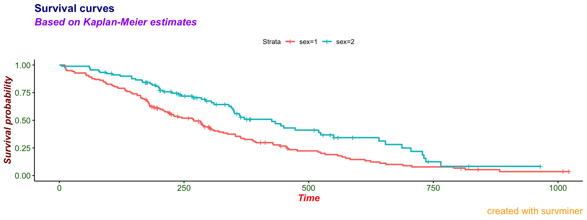
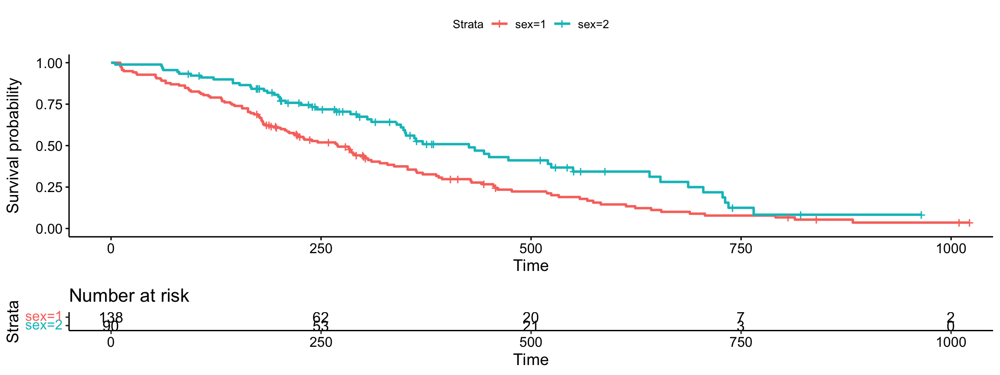

Playing with fonts and texts
Marcin Kosinski
Source:vignettes/Playing_with_fonts_and_texts.Rmd
Playing_with_fonts_and_texts.Rmdlibrary("survminer")
This vignette covers changes between versions 0.2.4 and 0.2.5 for additional texts and fonts customization enabled for subtitles and captions.
Survival plot
Basic
Compare the basic plot
library("survival") fit<- survfit(Surv(time, status) ~ sex, data = lung) # Drawing survival curves ggsurvplot(fit, data = lung)
Customized
with the plot where every possible text on a plot is specified
ggsurvplot(fit, data = lung, title = "Survival curves", subtitle = "Based on Kaplan-Meier estimates", caption = "created with survminer", font.title = c(16, "bold", "darkblue"), font.subtitle = c(15, "bold.italic", "purple"), font.caption = c(14, "plain", "orange"), font.x = c(14, "bold.italic", "red"), font.y = c(14, "bold.italic", "darkred"), font.tickslab = c(12, "plain", "darkgreen"))

Risk table
Now allow risk.table to be displayed.
Basic
Please compare basic plot with a risk table
ggsurvplot(fit, data = lung, risk.table = TRUE)

Customized
with the plot where every possible text on a plot and table is specified
ggsurvplot(fit, data = lung, title = "Survival curves", subtitle = "Based on Kaplan-Meier estimates", caption = "created with survminer", font.title = c(16, "bold", "darkblue"), font.subtitle = c(15, "bold.italic", "purple"), font.caption = c(14, "plain", "orange"), font.x = c(14, "bold.italic", "red"), font.y = c(14, "bold.italic", "darkred"), font.tickslab = c(12, "plain", "darkgreen"), ########## risk table #########, risk.table = TRUE, risk.table.title = "Note the risk set sizes", risk.table.subtitle = "and remember about censoring.", risk.table.caption = "source code: website.com", risk.table.height = 0.45)

ncens plot
Finally, allow ncens.plot to be displayed.
Basic
Please compare basic plot with a risk table and a ncens plot
ggsurvplot(fit, data = lung, risk.table = TRUE, ncensor.plot = TRUE)

Customized
with the full customization
ggsurvplot(fit, data = lung, title = "Survival curves", subtitle = "Based on Kaplan-Meier estimates", caption = "created with survminer", font.title = c(16, "bold", "darkblue"), font.subtitle = c(15, "bold.italic", "purple"), font.caption = c(14, "plain", "orange"), font.x = c(14, "bold.italic", "red"), font.y = c(14, "bold.italic", "darkred"), font.tickslab = c(12, "plain", "darkgreen"), ########## risk table #########, risk.table = TRUE, risk.table.title = "Note the risk set sizes", risk.table.subtitle = "and remember about censoring.", risk.table.caption = "source code: website.com", risk.table.height = 0.35, ncensor.plot = TRUE, ncensor.plot.title = "Number of censorings", ncensor.plot.subtitle = "over the time.", ncensor.plot.caption = "data available at data.com", ncensor.plot.height = 0.35)

Notes
- Note that you will probably need to extend the default risk table height and ncens plot height after those customizations.
- Distinct between
titleandsubtitlefor thecurve_plotandrisk.table.titleandrisk.table.subtitlefor thetable/ncens.plot.titleandncens.plot.subtitlefor thencens. - Fonts are set simultaneously for the
curve_plot, for thetableand for thencensparts. This might change in the future.